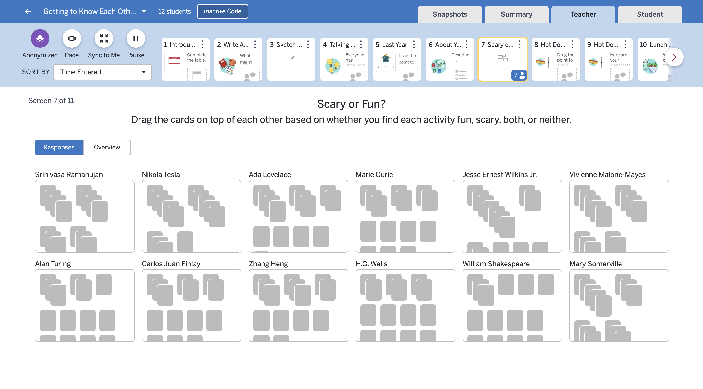
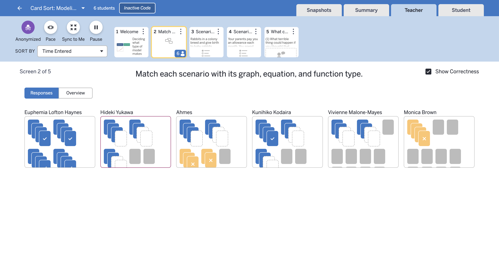
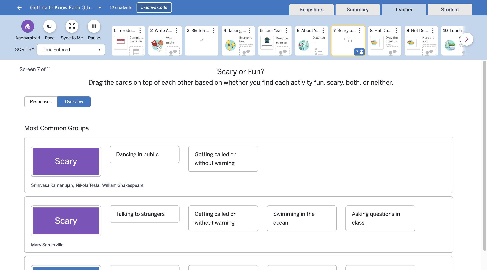
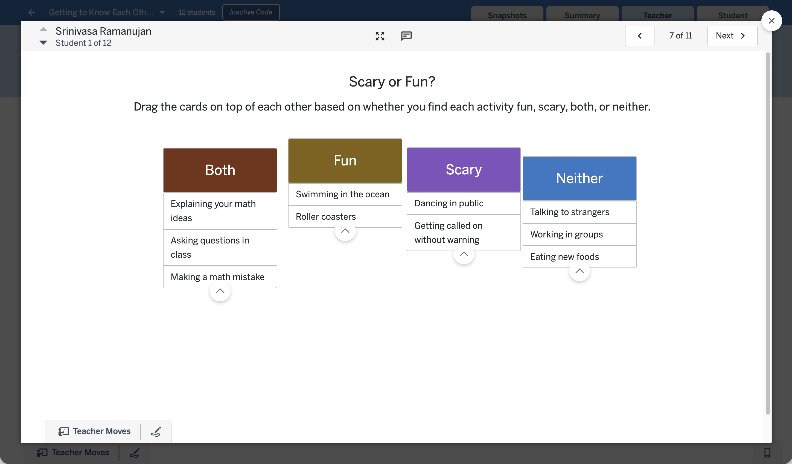
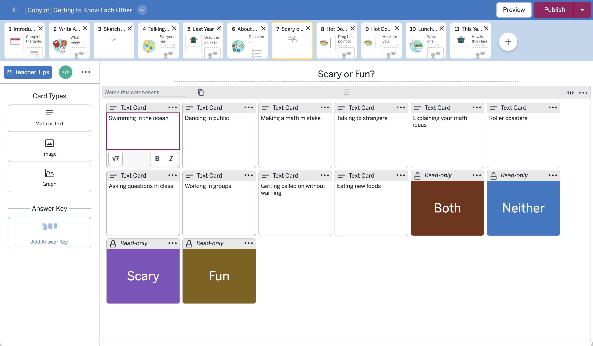

Digital Card Sorts
Overview
In 2016, we built a new component in the Desmos Activity Builder to help teachers with a paper task that required tons of printing, cutting, and keeping track of cards. By doing card sorts digitally, we could also help teachers easily project student work for discussion and highlight common groupings in the class.
“Gone are the days of paper cutters, laminators, more paper cutters, lost cards, and broken rubber bands. Yes, everyone can create their own card sorts.”




